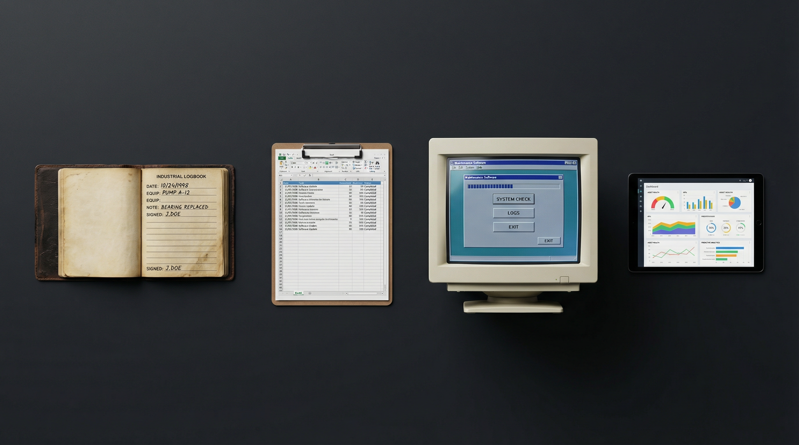
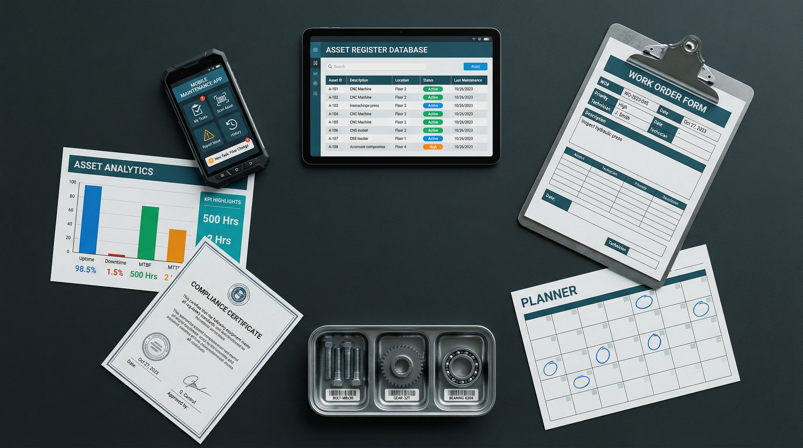

Somewhere in India right now, a factory floor manager is sending a WhatsApp message to log a machine breakdown. A maintenance engineer is updating a spreadsheet that nobody else reads. A purchase head is approving an emergency spare part order for the third time this month because nobody tracked stock levels. This is not a failure of people. This is the absence of a system.
That system has a name — Enterprise Asset Management. This guide covers what EAM actually is, how it evolved, what it manages, and why for Indian enterprises it is not a luxury or a future consideration. It is the difference between running a business and bleeding one.
What is Enterprise Asset Management?
EAM is the combination of processes, systems, and data that allows an organisation to manage the full lifecycle of its physical assets — from the moment of procurement to the moment of disposal. EAM is not just maintenance software. It covers procurement tracking, performance monitoring, compliance, maintenance scheduling, analytics, and disposal decisions.
Assets are not just machines. They include vehicles, buildings, utility infrastructure, medical equipment, IT hardware — anything the organisation owns and depends on to function. When any of these assets fails unexpectedly, the cost is not just the repair bill. It is the lost production, the delayed delivery, the regulatory violation, and the damaged customer relationship.

How EAM Evolved — From Logbooks to Intelligence
Asset management began with paper logbooks in the 1970s — manual records of equipment purchased, maintained, and retired. The 1990s brought CMMS platforms that digitised work orders and maintenance schedules. The 2000s saw EAM emerge as a broader discipline integrating financial data, compliance tracking, and multi-site operations.
Today, modern EAM platforms like Sapphire integrate IoT sensors, predictive analytics, and mobile field operations into a unified intelligence layer. The shift is from reactive to predictive — detecting the signal of failure weeks in advance and scheduling intervention before the breakdown occurs.
Why Indian Enterprises Cannot Afford to Wait
A single CNC machine breakdown in a precision engineering MSME can halt production for 12–48 hours, cost ₹4–8 lakhs in emergency repairs, and delay customer orders that took months to win. The MSME that operates 12 machines without an asset register has no visibility into which machine is most likely to fail next, which spare parts need to be on hand, or which vendor to call.
The perception that EAM is only for large enterprises is the most expensive myth in Indian industry. Sapphire EAM is built specifically for the Indian operational context — affordable SaaS pricing, mobile-first design that works on the factory floor, and implementation support in local languages. The payback period for most Indian MSMEs is under 4 months.

What Sapphire EAM Manages for Indian Operations
Sapphire EAM covers the complete asset lifecycle across six core modules: Asset Register — the single source of truth for every asset. Work Order Management — from creation to closure, on mobile. Preventive Maintenance Scheduling — time-based and usage-based. Spare Parts Inventory — with reorder automation. Vendor and Contractor Management. And Compliance and Audit Trails.
Each module connects to the others. A PM schedule generates a work order, which triggers a parts requisition, which updates inventory, which creates an audit record — automatically, without coordination overhead. One system. Complete operational visibility.
EAM vs CMMS vs ERP — Understanding the Difference
CMMS manages work orders and maintenance schedules. ERP manages finances, procurement, and HR. EAM sits at the intersection — it tracks assets as financial entities, manages their operational maintenance, and provides the compliance and analytics layer that neither CMMS nor ERP covers alone.
For Indian enterprises choosing between these systems, Sapphire delivers the combined capability of EAM and CMMS at a price point designed for Indian operational budgets — not a Western product adapted for India, but an Indian product built for the Indian operational reality from day one.